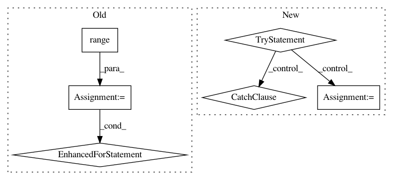

31832e8e8d05da9aaad1d608f7543579a2f166e6,libact/query_strategies/variance_reduction.py,VarianceReduction,Phi,#VarianceReduction#,50
Before Change
def Phi(self, pi, x, label_count, feature_count):
ret = 0.0
for i in range(label_count):
A = self.A(pi, i, x, label_count, feature_count)
F = self.Fisher(pi, x, label_count, feature_count)
ret += np.trace( np.dot(A, F) )
return ret
def E(self, X, y, qx, clf, label_count):
After Change
def Phi(self, PI, X, epi, ex, label_count, feature_count):
A, F = varRedu.estVar(0.000001, PI, X, epi, ex)
try:
ret = np.trace(np.dot(A, np.linalg.pinv(F)))
except:
print(F)
return ret
def E(self, X, y, qx, clf, label_count):
In pattern: SUPERPATTERN
Frequency: 4
Non-data size: 6
Instances
Project Name: ntucllab/libact
Commit Name: 31832e8e8d05da9aaad1d608f7543579a2f166e6
Time: 2015-03-02
Author: yangarbiter@gmail.com
File Name: libact/query_strategies/variance_reduction.py
Class Name: VarianceReduction
Method Name: Phi
Project Name: kk7nc/RMDL
Commit Name: 5990ff004b0ba05a994edf760c229401a6cca340
Time: 2018-03-07
Author: kk7nc@virginia.edu
File Name: src/RMDL_Image.py
Class Name:
Method Name: image_classifciation
Project Name: tensorflow/tpu
Commit Name: 71900d314ad4e503f80e67b6a67be42c8b92f9ee
Time: 2020-05-12
Author: pengchong@google.com
File Name: models/official/detection/executor/tpu_executor.py
Class Name: TpuExecutor
Method Name: evaluate
Project Name: senarvi/theanolm
Commit Name: e185a7110ec79864dcef5114b71356691eec39df
Time: 2016-07-16
Author: seppo.git@marjaniemi.com
File Name: theanolm/commands/sample.py
Class Name:
Method Name: sample